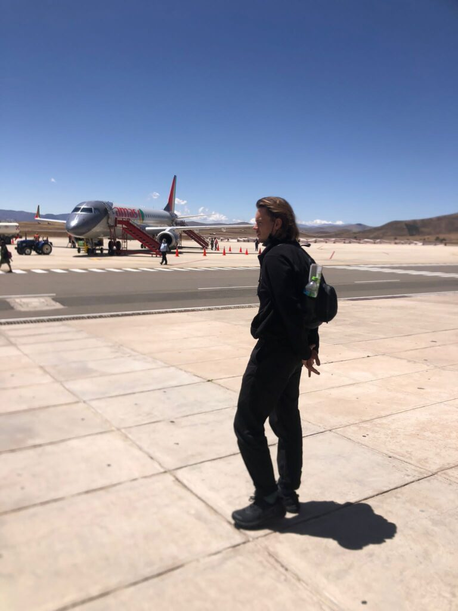
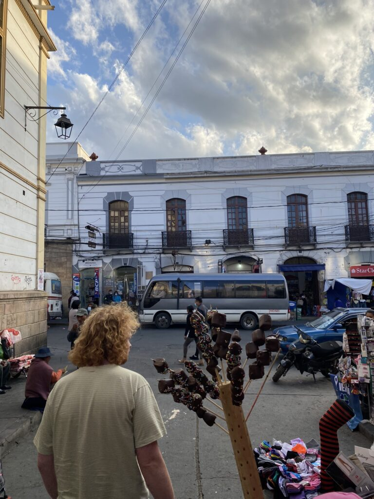
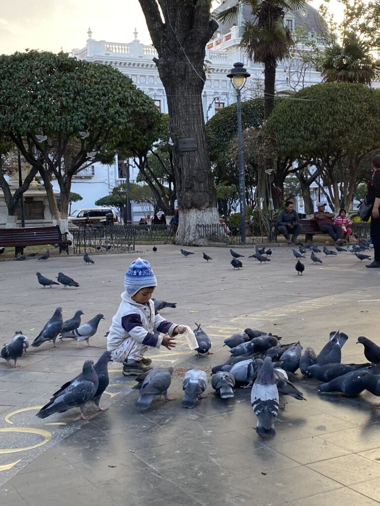
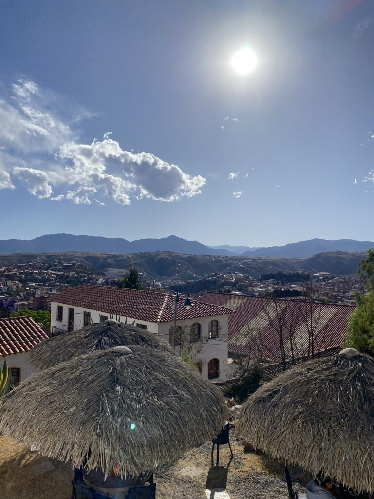
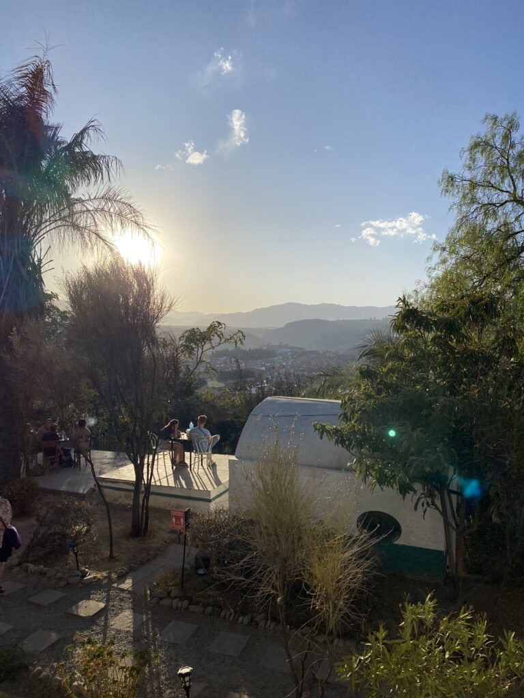
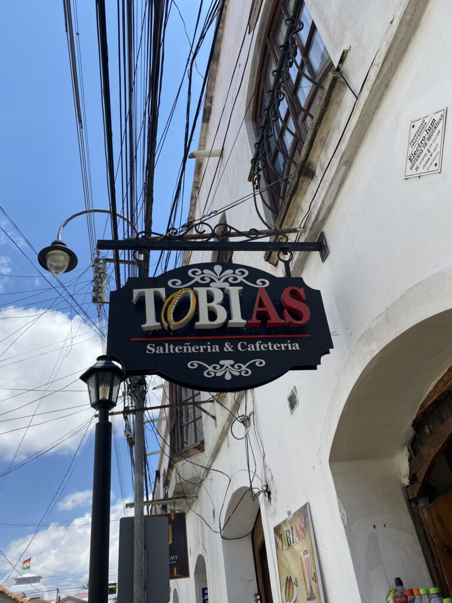
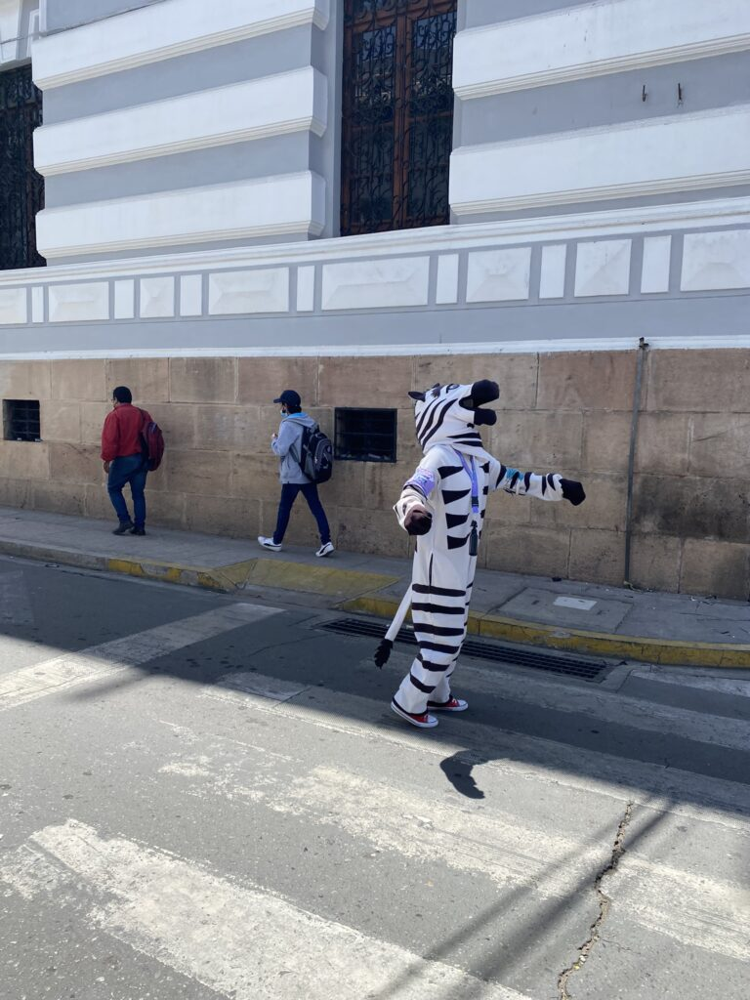

Het is onwerkelijk, altijd geweest al. Het is vijfenhalf jaar geleden toen ik voor het eerst met de matigst mogelijke voorbereiding een litersgrote backpack naar een ander continent verscheepte om het absolute (van alles) te beproeven. Nu is het wederom onwennig; alle tijd en ruimte van de wereld hebben. En tegelijkertijd word je meteen met je neus op feiten gedrukt. Ik heb geen huis, geen dagindeling en ben volledig buiten controle over wie er op mijn rommelige pad belandt. Geen betere plek dan het mierzoete Sucre om het nomadische bestaan te omarmen. Ook al is mijn creditcard binnen een recordtijd al beland bij een anonieme vinder. Mierda.
Bolivia is het land van geloof, van de verontschuldigende lach, van de uitbundige kloffies, de bejaarde stinkbolides, gastvrijheid en verlegenheid. De veertig jaar jonge democratie kent pas sinds 2008 gelijkheid voor de inheemsen, die met een prachtige cultuur een grote meerderheid van het land vormen. Het uitbundige carnaval, de onderdanige heilige week en de stierengevechten waarin dronken inwoners hun levens op het spel zetten, worden ons nog even onthouden. Maar ook in het normale straatleven blijven de nieuwe indrukken zich opstapelen.

Na 24 uur vliegen, zuchten en hangen is een hoogtepunt al de vlucht naar de hoofdstad vanuit verzamelpunt Santa Cruz. Even lijkt de slaap zich meester van me te maken, totdat de wolken naast de vliegtuigramen optrekken en ik vanaf een paar duizend meter hoogte naar beneden kijk. Angstvallig dichtbij ontwapenen de bergtoppen zich onder het vliegtuig. Onder het decor van een knalblauwe lucht en een schelle zon lijken de variërende, bruine en droge vlaktes eindeloos. Even schrikken als we er middenin landen: slechts een streep asfalt in het gebied van niemand.
Het wordt al snel duidelijk dat je van de doorsnee Boliviaan niets hebt te vrezen (hopelijk krijg ik geen spijt van deze zin). Onze taxichauffeur gaat ons niet oplichten, over alles valt te onderhandelen en een verlegen glimlach is altijd de toegift na een vluchtige ontmoeting. De chauffeur weet honderden meters van tevoren waar hij aan de kant moet om een kudde schapen te ontwijken. Een passant ontwijkt je niet als je om een vuurtje vraagt, maar helpt je mee in je zoektocht.

Een heikel punt waar de Partij voor de Dieren wellicht een lans voor kan breken in Nederland, is de hier alom vertegenwoordigde rubberen wc-bril, die al een scheet laat voordat jij eraan toekomt. Goed, het opgeslurpte bilzweet van anderen dat vrijkomt bij het neerdalen moet je even negeren, maar met de plasticbesparing in het achterhoofd is de nationale aanschaf het overwegen waard.
Mijn grootste vraagstuk wordt beantwoord met de geur van versgeslachte dieren en de aanblik van drogende karkassen. Op de markt en in de restaurants blijkt vlees in bijna alles verwerkt te zijn, behalve in de mierzoete ontbijtjes. Desondanks is het enige vegetarische restaurant in de stad er eentje om dagelijks bij terug te komen. De poeslieve chef redt voor nu mijn diervriendelijke idealen, al zullen die in veelbelovende meerdaagse trips in dit onvoorstelbaar mooie land nog zwaar op de proef worden gesteld. Gelukkig heb ik mijn lieve vriend en privékok bij me, wiens verbazing zichtbaar tot een hoogtepunt komt bij het zien van bitterballen op de lokale menukaart en hagelslag in de supermercados.

Nog één nacht is er nodig om de acclimatisering te complementeren en in een nieuw ritme te geraken. Het begint voorspoedig; mijn ogen vallen dicht voordat de nacht volledig intreedt. Tot een ontegenzeggelijk emotioneel geluid mijn oordoppen doordringt. Het blijkt een snurk. Een snurk zo krachtig, dat hij de dormroom volledig terroriseert. Het volume, ritme en type geluid die de onbekende gast uitstoot blijken zowel diepfrustrerend als intrigerend. De doodsangst bij het inademen lijkt een poging om diepe trauma’s te verwerken en het hakkelende expireren lijkt een groet aan de naderende dood. De verkeersoverstijgende houtzagerij betekent het einde van mijn nachtrust, maar geeft me rijkelijk de kans te fantaseren over de achtergrond van deze luidruchtige verschijning. Vluchtte deze inheemse man van het platteland naar de grote stad in een poging de armoede in te ruilen voor de katholieke zingeving? Of is zijn welvarende leven er eentje zonder vrienden, waarin hij nachtelijke geluiden leerde produceren om minder alleen te zijn? Als hij om zes uur ‘s ochtends de kamer plots verlaat, achtervolg ik zijn gelaat om naar de wc te gaan. De ronde Zuid-Amerikaanse man staat op de gang alles op de rochelen wat hij ‘s nachts had verzameld. Onze blikken kruizen elkaar; rode, slaperige ogen versus een gefronste gelaatsuitdrukking. Begrip, schaamte en erkenning ontbreken volledig.
Vraag me naar de cultuur. Die is er. Na een korte klim, die ons een prachtig uitzicht over de stad bezorgt, vinden we onszelf terug in het museum voor de kunst van inheemsen. De wonderbaarlijke weefwerken in de traditionele leefgebieden zijn een uitzonderlijke ambacht. Grappig hoe de ontwerpen van soms duizenden jaren oud overeenkomen met de hipstermode van nu. Ik wil er een trui van.
Aan muziek geen gebrek. Valse fluitpartijen en warm gezang vormen het ritme van de endemische volkeren. Bombastische mariachi-bands en fanfares vullen de straten en de taxi-boomboxen stoten foute 90s hits uit.

Joder; kathedralen en basilisken bouwen kun je wel overlaten aan dit oerkatholieke oord. Ondanks dat we braaf elke ochtend onze Spaanse lessen volgen (Luc’s lerares sleurt hem van de sportschool tot de lokale keukens de hele stad door, met die van mij krijg ik amper oogcontact) en in de middag een poging doen tot blokken, blijken we totaal door de mand te vallen als we een Spaanstalige gids kijgen bij een tour door de hoofdkathedraal. Zijn woordenbrij vervaagt zich langzaam met de indrukwekkende kunst, blingbling en kerkkleuren. Gelukkig is een langdradige gaap makkelijk te verbergen achter een mondkapje, dat hier nog onderdeel is van het straatbeeld. Samen met sierlijke hoeden, mutsen, geknielde vrouwen met sporadisch een lokale lekkernij of ambacht, maar voornamelijk fruit of in plastic verpakte zoete snacks. Bij momenten mensen met skipakken terwijl het 21 graden celcius is. Trotse bewoners rijden eindeloos rondjes in Toyota Corolla’s en Suzuki Alto’s uit de vorige eeuw, die penetrerende walmen uitstoten.
Dit weekend laven we ons aan het Boliviaanse nachtleven. Het feesthostel roept, grijpt ons bij de ballen, laat ons niet meer los, of duwt ons juist naar het westen. Ben jij ook zo benieuwd?
Liefde van Storm


